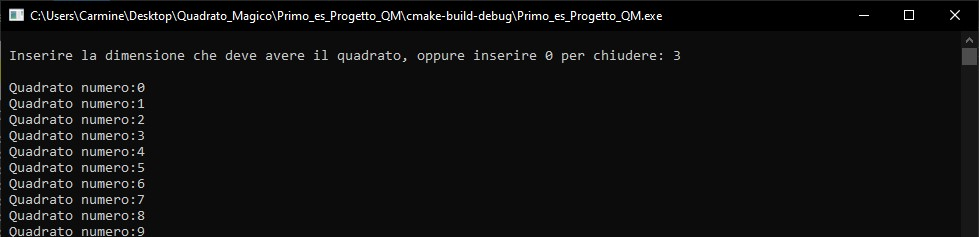

Relazione_Coppola_Carmine_Matricola:0124/2379
Quadrato Magico:
Si vuole implementare un programma per la simulazione del gioco del quadrato
magico.Un quadrato viene definito magico se la somma di ogni riga, ogni colonna e
ogni diagonale è sempre lo stesso numero (costante magica). Ad esempio, usando gli
interi 1,2, …, 9 il seguente è un quadrato magico con somma uguale a 15:

Sviluppare un programma che date le dimensioni del quadrato n x n e numeri interi
da 1 a n2 verifichi se la matrice è un quadrato magico. Le matrici vengono generate
con numeri casuali. Effettuare ogni test per 1000 volte visualizzando la percentuale
di successi.
Effettuare almeno 3 simulazioni variando le dimensioni del quadrato.
Header.h:
// Created by Carmine on 03/01/2021.
#include
#include
#include
#define MAX 100 //Definisce la massima grandezza del quadrato (es. 3x3/4x4...)
#define true 1
void riempi_arr(int a[][MAX], int); //funzione che per leggere la matrice la riempie di zeri
int in_arr(int a[][MAX],int num, int ); //per verificare se il numero generato sia gia presente nella matrice
int operazioni(int a[][MAX],int ,int ); //Per verificare la somma dei numeri delle colonne/righe/diagonali con la costante magica
int costante_magica(int ); //Calcolo della costante magica per ricercare il quadrato
Main.c:
// Created by Carmine on 03/01/2021.
#include "header.h"
int main()
{
int contatore;
int conta_volte=3; /*Le vote in cui chiedo di inserire una nuova matrice*/
int trovate_tot=0;
int dim_utente=0;
int a[MAX][MAX];
srand(time(NULL));
while(conta_volte >0)
{ //Faccio inserire le dimensioni del quadrato all'utente
conta_volte--;
printf("\n Inserire la dimensione che deve avere il quadrato, "
"oppure inserire 0 per chiudere: ");
scanf("%d",&dim_utente);
if(dim_utente==0){
exit(0);
}
riempi_arr(a,MAX); //matrice piena di 0 per leggerla tutta
for (contatore = 0;contatore <1000;contatore++)
{
int esecuz_op=0;
riempi_arr(a,dim_utente); //riempimento della matrice
int i, j;
int num;
//Generazione e stampa del quadrato
for (i = 0; i < dim_utente; i++) {
for (j = 0; j < dim_utente; j++) {
while (in_arr(a, num = 1 + rand() % (dim_utente * dim_utente),
dim_utente)); //per non far ripetere i numeri
a[i][j] = num;
}
}
int co_mg = costante_magica(dim_utente); //assegnazione costante magica
printf("\n Quadrato numero:%d",contatore);
esecuz_op=operazioni(a, co_mg,dim_utente);
if(esecuz_op == 0) {
printf ("\n ******Trovato****** \n");
trovate_tot++;
printf("\n La percentuale parziale di trovare un quadrato magico e': %f",(trovate_tot*100/(float)contatore));
for (i = 0; i < dim_utente; i++) {
printf("\n"); /*per far si che si visualizzi la forma
*di un quadrato*/
for (j = 0; j < dim_utente; j++) {
printf("|%d|", a[i][j]); /*scrivo la matrice trovata*/
}
}
printf("\n\n Premi invio per continuare a cercare");
getchar(); /*blocca il programma per leggere*/
}
}
printf("\n\n I quadrati che sono stati trovati sono :%d \n ",trovate_tot);
printf("\n La percentuale totale di trovare un quadrato magico e': %f \n",(trovate_tot*100/(float)contatore));
}
return 0;
}
Header.c:
// Created by Carmine on 03/01/2021.
#include "header.h"
int in_arr(int a[][100],int num,int n_ut)
{
for ( int i = 0; i < n_ut; i++) {
for ( int j = 0; j < n_ut; j++){ //Serve per verificare se il numero generato sia presente all'interno
if(num == a[i][j]){ //della matrice cosi per non far ripetere i numeri
return 1;
}
}
}
return 0;
}
void riempi_arr(int a[][100],int n_ut)
{
for (int i = 0; i < n_ut; i++) { //Lo uso per riempire l'array di zeri per leggere tutta la matrice
for (int j = 0; j < n_ut; j++) {
a[i][j]=0;
}
}
}
int costante_magica(int n_ut)
{
return (n_ut *(n_ut * n_ut + 1)) /2; //Formula per la ricerca della costante magica
//[n*(n^2+1)/2]
}
int operazioni(int a[][100], int magic,int n_ut) //Ci sono tutte le operazioni che si devono fare
{ //per dimostrare se un quadrato è magico
int i,j; //(I su righe, J su colonne)
int som_rig,som_col,som_d1,som_d2;
//Controllo delle RIGHE*/
som_rig=0;
for(i=0; i < n_ut;i++) {
for(j=0; j< n_ut; j++)
som_rig+=a[i][j];
if (som_rig!=magic)
return 0; //6 codice errore sulle righe
else
som_rig=0;
}
//Controllo delle COLONNE*/
som_col=0;
for(j=0; j < n_ut; j++){
for(i=0; i < n_ut; i++)
som_col+=a[i][j];
if (som_col!=magic)
return 0; //7 codice errore sulle colonne
else
som_col=0;
}
//Controllo della Prima Diagonale Principale (Dx)
som_d1=0;
for(i=0; i < n_ut; i++)
som_d1+=a[i][i];
if(som_d1!=magic)
return 0; //8 codice errore diagonale 1
//Controllo della Seconda Diagonale Principale (Sx)
som_d2=0;
for(i=0; i < n_ut;i++)
som_d2+=a[i][n_ut-1-i];
if(som_d2!=magic)
return 0; //9 codice errore su diagonale 2
return 0; //0 codice che indica che c'è un quadrato magico
}
Sono state eseguite 3 simulazioni con dimensioni differenti in 1000 tentativi:
Simulazione con base 3:

Risultato della simulazione con base 3:
Simulazione con base 4:
Risultato della simulazione con base 4:
Simulazione con base 15:
Risultato della simulazione con base 15:
Questa è una mia piccola riflessione:
Dopo accurate ricerche ho verificato che la probabilità di trovare un quadrato magico di numeri casuali in 1000 tentativi è
bassissima ,quasi pari allo zero, per cui per verificare che il mio programma funzionasse perfettamente ho aumentato i tentativi ad almeno 100000
ed ecco il risultato con dimensione 3x3:
Ecco il primo quadrato MAGICO trovato:
Ecco il secondo quadrato MAGICO trovato::
Questa è la percentuale finale di trovare un quadrato MAGICO in 100.000 tentativi:
-----------------------------------------------------------------------------------------------------------------------------------------------------------------------------------------------------------------------------------------------------------
Conto Corrente:
Si supponga di voler gestire i conti correnti di n utenti. Ogni utente è identificato dal
Cognome, Nome, numero del conto, lista movimenti.Gestire i conti correnti e gestire le seguenti operazioni:
• Inserire un nuovo correntista a cui viene assegnato un codice univoco.
•Visualizzare la lista movimenti di un dato correntista (dato il numero del conto o
Cognome/Nome) in una fissata data.
Implementare l’algoritmo per la simulazione dei conto corrente.
Effettuare e
visualizzare almeno un test per ognuna delle opzioni richieste.
Header.h:
// Created by Carmine on 07/01/2021.
#include
#include
#include
typedef struct Data {
int giorno;
int mese;
int anno;
} Data;
typedef struct Correntista {
char Nome[50];
char Cognome[50];
int ID_UTENTE;
struct Correntista *new_user;
} Correntista;
typedef struct Movimenti_Bancari{
Correntista dati_utente; //ID_conto-Nome-Cognome
int operazione; //1)Deposito-2)Prelievo
float saldo; //Saldo del conto
Data data; //Data di un operazione
} Movimenti;
Main.c:
// Created by Carmine on 07/01/2021.
#include
#include "header.h"
#define MAX_CORR 10
#define MAX_MOVIM 10
int main() {
//Definisco la mia Lista di Correntisti
Correntista correntista[MAX_CORR];
Movimenti movi[MAX_MOVIM];
char nom_ins[20],cog_ins[20];
int scelta=0,sec_scelta=0,scelta_op=0;
int id_utente=1;
int i_correntista=0;
int i_movi=0;
int i;
int meseinteresse;
int day,month,year;
char name_ins,surname_ins;
int cod_ut_inserito;
float quantita_prel=0.00;
float quantita_dep=0.00;
int trovato=0;
while(scelta!=-1) {
printf("----------------------------------------\n");
printf("| |\n");
printf("| Menu Iniziale: |\n");
printf("| 1) Inserisci nuovo Correntista |\n");
printf("| 2) Correntista gia esistente |\n");
printf("| 9) Esci |\n");
printf("| |\n");
printf("----------------------------------------\n");
printf("Scegli:");
scanf("%d",&scelta);
//Tramite uno switch il programma esegue diverse procedure
switch (scelta) {
case 9:{
exit(0);
}
case 1: {
printf("\nInserisci il Nome:");
scanf("%s",nom_ins);
printf("Inserisci il Conome:");
scanf("%s",cog_ins);
printf("\nQuesto e' il tuo Id_utente:%d\n",id_utente);
//copio i dati nella struct Correntista
strcpy(correntista[i_correntista].Nome,nom_ins);
strcpy(correntista[i_correntista].Cognome, cog_ins);
correntista[i_correntista].ID_UTENTE=id_utente;
//copio i dati nei movimenti correntistari
movi[i_movi].saldo=0.00;
movi[i_movi].dati_utente=correntista[i_correntista];
id_utente++;
i_correntista++;
i_movi++;
printf("\n**Il Correntista e' stato inserito**\n\n");
}break;
case 2:{
printf("\nScegliere quale di questo dato si vuole inserire\n1)Nome\n2)Cognome\n3)ID_utente");
printf("\nScelta:");
scanf("%d",&sec_scelta);
/*Ho scelto di inserire il NOME*/
if (sec_scelta==1) //ho scelto di inserire il nome
{
printf("\nInserisci il nome:");
scanf("%s",&name_ins);
//verifico se il correntista esisre
for (i = 0; i < MAX_MOVIM; i++){
if (strcmp(movi[i].dati_utente.Nome,nom_ins)) {
trovato=1;
printf("\n***IL NOME E' CORRETTO***\n");
printf("\n\n");
printf("\n\n");
printf("****************************************\n");
printf("* Menu Operazioni: *\n");
printf("* 1) Prelievo *\n");
printf("* 2) Versamento *\n");
printf("* 3) Lista Movimenti *\n");
printf("* 9) Uscire *\n");
printf("****************************************\n");
printf("\n Scelta:");
scanf("%d", &scelta_op);
switch (scelta_op) {
//CASO DI USCITA
case 9:{
exit(0);
}
//PRELIEVO
case 1: {
printf("\nInserire la quantita' da prelevare:");
scanf("%f", &quantita_prel);
if (quantita_prel < movi[i].saldo) {
//Inserisco la data dell'operazione
printf("\nInserisci data nel formato giorno/mese/anno (Es: 10/11/2012):");
scanf("%d/%d/%d", &day, &month, &year);
movi[i].data.giorno = day;
movi[i].data.mese = month;
movi[i].data.anno = year;
movi[i_movi]=movi[i];
movi[i_movi].saldo =
movi[i_movi].saldo - quantita_prel; //sottraggo l'importo inserito al saldo
printf("\nIl prelievo e' andato a buon fine\n");
printf("\nIl tuo saldo e':%f\n",movi[i_movi].saldo);
movi[i_movi].operazione=2;//Aggiungo il tipo di operazione
i_movi++;
} else{
printf("\nIl saldo e' insufficiente\n");
}
}break;
//DEPOSITO
case 2: {
//Faccio inserire la data dell'operazione
printf("Inserisci data nel formato giorno/mese/anno (Es: 10/11/2012) :");
scanf("%d/%d/%d", &day, &month, &year);
movi[i].data.giorno = day;
movi[i].data.mese = month;
movi[i].data.anno = year;
movi[i_movi]=movi[i];
//Effettuo l'accredito
printf("\nInserire la quantita' da accreditare:");
scanf("%f", &quantita_dep);
movi[i_movi].saldo = movi[i_movi].saldo + quantita_dep;
//Aggiungo un'operazione poiche è stata effettuata
movi[i_movi].operazione=1;//Aggiungo il tipo di operazione
printf("\nIl tuo saldo e':%f\n",movi[i_movi].saldo);
printf("\n\n***L'accredito e' avvenuto correttamente***\n\n");
i_movi++;
}break;
//LISTA MOVIMENTI
case 3: {
//Faccio inserire la data dell'operazione
printf("\nInserisci il mese di interesse:");
scanf("%d",&meseinteresse);
//movi[i] è il mio correntista
for (int j = 0; j < MAX_MOVIM; j++){
if(movi[i].dati_utente.ID_UTENTE == movi[j].dati_utente.ID_UTENTE){
if(movi[i].data.mese==meseinteresse){
printf("\nQuesti sono i movimenti correntistari che hai fatto:\nNumero di movimenti=%d\n\n", movi[i].operazione);
}
}
}
movi[i].data.giorno = day;
movi[i].data.mese = month;
movi[i].data.anno = year;
}break;
}
break;
}
}
if (trovato!=1){//IL NOME NON E' STATO TROVATO
printf("\n\nIl nome non e' stato torovato");
}
trovato=0;
}
/*Ho scelto di inserire il COGNOME*/
if (sec_scelta==2){
printf("\nInserisci il cognome:");
scanf("%s",&cog_ins);
//verifico se il correntista esisre
for (i = 0; i < MAX_MOVIM; i++){
if (strcmp(movi[i].dati_utente.Cognome,cog_ins)) {
trovato=1;
printf("\n***IL COGNOME E' CORRETTO***\n");
printf("\n\n");
printf("\n\n");
printf("****************************************\n");
printf("* Menu Operazioni: *\n");
printf("* 1) Prelievo *\n");
printf("* 2) Versamento *\n");
printf("* 3) Lista Movimenti *\n");
printf("* 9) Uscire *\n");
printf("****************************************\n");
printf("\n Scelta:");
scanf("%d", &scelta_op);
switch (scelta_op) {
//CASO DI USCITA
case 9:{
exit(0);
}
//PRELIEVO
case 1: {
//Effettuo il prelievo
printf("\nInserire la quantita' da prelevare:");
scanf("%f", &quantita_prel);
if (quantita_prel < movi[i].saldo) {
//Inserisco la data dell'operazione
printf("\nInserisci data nel formato giorno/mese/anno (Es: 10/11/2021):");
scanf("%d/%d/%d", &day, &month, &year);
movi[i].data.giorno = day;
movi[i].data.mese = month;
movi[i].data.anno = year;
movi[i_movi]=movi[i];
movi[i_movi].saldo = movi[i_movi].saldo - quantita_prel; //sottraggo l'importo inserito al saldo
printf("\nIl prelievo e' andato a buon fine\n");
printf("\nIl tuo saldo e':%f\n",movi[i_movi].saldo);
movi[i_movi].operazione=2;//Aggiungo il tipo di operazione
i_movi++;
} else{
printf("\nIl saldo e' insufficiente\n");
}
}break;
//DEPOSITO
case 2: {
//Faccio inserire la data dell'operazione
printf("Inserisci data nel formato giorno/mese/anno (Es: 10/11/2012) :");
scanf("%d/%d/%d", &day, &month, &year);
movi[i].data.giorno = day;
movi[i].data.mese = month;
movi[i].data.anno = year;
movi[i_movi]=movi[i];
/*Effettuo l'accredito*/
printf("\nInserire la quantita' da accreditare:");
scanf("%f", &quantita_dep);
movi[i_movi].saldo = movi[i_movi].saldo + quantita_dep;
/*Aggiungo un'operazione poiche è stata effettuata*/
movi[i_movi].operazione=1;//Aggiungo il tipo di operazione
printf("\n***L'accredito e' avvenuto correttamente***\n\n");
printf("\nIl tuo saldo e':%f\n",movi[i_movi].saldo);
i_movi++;
}break;
//LISTA MOVIMENTI
case 3: {
//Faccio inserire la data dell'operazione
printf("\nInserisci il mese di interesse:");
scanf("%d",&meseinteresse);
for (int j = 0; j < MAX_MOVIM; j++){
if(movi[i].dati_utente.ID_UTENTE == movi[j].dati_utente.ID_UTENTE){
if(movi[i].data.mese==meseinteresse){
printf("%d", movi[i].operazione);
}
else if(strcmp(movi[i].dati_utente.Nome,movi[j].dati_utente.Nome)){
if(movi[i].data.mese==meseinteresse)
{
printf("%d", movi[i].operazione);
}
} else if (strcmp(movi[i].dati_utente.Cognome,movi[j].dati_utente.Cognome))
{
if(movi[i].data.mese==meseinteresse)
{
printf("\nQuesti sono i movimenti correntistari che hai fatto:\nNumero di movimenti=%d\n\n", movi[i].operazione);
}
}
}
movi[i].data.giorno = day;
movi[i].data.mese = month;
movi[i].data.anno = year;
}break;
}break;
}
}
//IL COGNOME NON E' STATO TROVATO
if (trovato!=1)
{
printf("\n\nIl Cognome non e' stato torovato");
}
trovato=0;
}
}
/*Ho scelto di inserire l'ID_utente*/
else if(sec_scelta==3){
printf("\nInserisci l'ID Utente:");
scanf("%d",&cod_ut_inserito);
//verifico se il correntista esisre
for (i = 0; i < MAX_MOVIM; i++){
if (movi[i].dati_utente.ID_UTENTE==cod_ut_inserito) {
trovato=1;
printf("\n***L ID UTENTE E' CORRETTO***\n");
printf("\n\n");
printf("\n\n");
printf("****************************************\n");
printf("* Menu Operazioni: *\n");
printf("* 1) Prelievo *\n");
printf("* 2) Versamento *\n");
printf("* 3) Lista Movimenti *\n");
printf("* 9) Uscire *\n");
printf("****************************************\n");
printf("\n Scelta:");
scanf("%d", &scelta_op);
switch (scelta_op) {
//CASO DI USCITA
case 9:{
exit(0);
}
//PRELIEVO
case 1: {
//Effettuo il prelievo
printf("\nInserire la quantita' da prelevare:");
scanf("%f", &quantita_prel);
if (quantita_prel < movi[i].saldo) {
//Inserisco la data dell'operazione
printf("\nInserisci data nel formato giorno/mese/anno (Es: 10/11/2021):");
scanf("%d/%d/%d", &day, &month, &year);
movi[i].data.giorno = day;
movi[i].data.mese = month;
movi[i].data.anno = year;
movi[i_movi]=movi[i];
movi[i_movi].saldo =
movi[i_movi].saldo - quantita_prel; //sottraggo l'importo inserito al saldo
printf("\nIl prelievo e' andato a buon fine\n\n");
printf("\nIl tuo saldo e':%f\n",movi[i_movi].saldo);
movi[i_movi].operazione=2;//Aggiungo il tipo di operazione
i_movi++;
} else{
printf("\nIl saldo e' insufficiente\n");
}
}break;
//DEPOSITO
case 2: {
//Faccio inserire la data dell'operazione
printf("Inserisci data nel formato giorno/mese/anno (Es: 10/11/2021) :");
scanf("%d/%d/%d", &day, &month, &year);
movi[i].data.giorno = day;
movi[i].data.mese = month;
movi[i].data.anno = year;
//movi[i] è il mio correntista
movi[i_movi]=movi[i];
//Effettuo l'accredito
printf("\nInserire la quantita' da accreditare:");
scanf("%f", &quantita_dep);
movi[i_movi].saldo = movi[i_movi].saldo + quantita_dep;
//Aggiungo un'operazione poiche è stata effettuata
movi[i_movi].operazione=1;//Aggiungo il tipo di operazione
printf("\n***L'accredito e' avvenuto correttamente***\n\n");
printf("\nIl tuo saldo e':%f\n",movi[i_movi].saldo);
i_movi++;
}break;
//LISTA MOVIMENTI
case 3: {
//Faccio inserire la data dell'operazione
printf("Inserisci il mese di interesse:");
scanf("%d",&meseinteresse);
//movi[i] è il mio correntista
for (int j = 0; j < MAX_MOVIM; j++)
{
if(movi[i].dati_utente.ID_UTENTE == movi[j].dati_utente.ID_UTENTE)
{
if(movi[i].data.mese==meseinteresse)
{
printf("\nQuesti sono i movimenti correntistari che hai fatto:\nNumero di movimenti=%d\n\n", movi[i].operazione);
}
}
}
movi[i].data.giorno = day;
movi[i].data.mese = month;
movi[i].data.anno = year;
}break;
}
break;
}
}
if (trovato!=1){//IL NOME NON E' STATO TROVATO
printf("\n\nIl nome non e' stato torovato");
}
trovato=0;
}
}
}
}
}
Ecco le simulazioni del Conto Corrente:
Inserimento di un nuovo Correntista:
Operazioni sul correntista:
1)Operazione di Versamento:
2)Operazione di Prelievo:
Lista Movimenti:
Eseguo un unica operazione di Deposito nel mese di Maggio:
Ecco la lista dei movimenti nel mese di Maggio:
Piccola Descrizione:
Per sviluppare questo progetto ho immaginato che un correntista possa disporre di un'unico conto corrente, e che potesse eseguire un'unica
operazione alla volta.Nel caso dell'inserimento di un nuovo correntista, gli si chiedeva di inserire i propri nominativi e gli si generava un
codice utente univoco.
Nel caso in cui, invece il correntista avesse gia il suo conto poteva usufruire di tre scelte per farsi riconoscere ed accedere:
1)L'identificazione tramite il nome;
2)L'identificazione tramite il Cognome;
3)L'identificazione tramite il suo Codice Utente;
Cosi' facendo ad ogni scelta ,dopo aver verificato che l'identità fosse corretta, si potevano eseguire le operazioni
di prelievo/deposito oppure si poteva chiedere di mostrare la propria lista movimenti.
Per quanto riguarda la Lista dei movimenti ho preferito mostrare il numero di operazioni effettuate in un dato mese.
Clicca qui per ritornare al Quadrato Magico
↺
↻ Clicca qui per ritornare al Conto Corrente